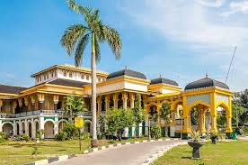
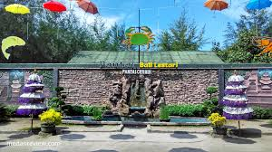

~Rizky Febryansya
~Donny Suhendri
~Meli Afriani
~M.Khairuddin
 Istana ini mulai dibangun 125 tahun silam, Pendiri Istana Maimun adalah Sultan Makmun Al Rasyid Perkasa Alamsyah, Putra Sulung dari Sultan Mahmud Perkasa Alamsyah yang merupakan pendiri kota Medan. Istana tersebut memiliki ruang halamannya pun sangat luas. Ruang-ruang yang ada di Istana Maimun memilki fungsinya masing-masing seperti untuk acara adat kerajaan, ruangan bagi para tamu kerajaan, gudang, dapur, dan lainnya. Bangunan Istana Maimun di Medan memiliki desain perpaduan antara tradisi Melayu, arsitektur Eropa dan Islam. Kesultanan Deli memcapai puncak kejayaan saat berada di bawa kepemimpinan Sultan Makmun Al Rasyid Perkasa Alamsyah. Pada masa itu pula, tepatnya di tahun 1888 Istana Maimun dibangun. Pembangunan Istana kabarnya menghabiskan dana setara satu juta golden Belanda. Pembangunan istana ini dimulai pada 26 Agustus 1888 dan selesai 18 Mei 1891. Hingga kini, Istana Maimun masih menjadi bukti atas kemegahan dari kesultanan Deli Pada masanya.

Sumatera Utara diberkahi dengan alam yang begitu indah. Selain Danau Toba dan Air Terjun Sipiso-piso, ada aneka pantai cantik yang bisa dikunjungi. Salah satu pantai yang wajib dikunjungi yakni Pantai Bali Lestari yang kontur dan landscape yang mirip pantai – pantai di Bali. Desainnya bahkan didesain mirip dengan pantai – pantai di Bali bersama ciri khasnya.
Pantai Bali Lestari terletak di Jl Pematang Pasir, Pantai Cermin, Perbaungan, Kabupaten Serdang Bedagai, Sumatera Utara. Di sini kalian bisa menikmati pantai dengan suasana Pulau Dewata Bali. Dilihat dari desain tempat makan, restoran, ornamen gapura seperti pura-pura yang ada di pulau Bali.Pengelola pantai ini sengaja menciptakan suasana pantai seperti di Pulau Bali agar lebih terkesan unik dari pantai-pantai yang ada di daerah pesisir Serdang Bedagai yang banyak dijumpai.
Asal mula pantai ini bernama Pantai Lestari Indah. Setelah pengelola pantai mengubah konsep pantai ini seperti suasana di pulau Bali, hingga pantai ini pun berubah nama menjadi Pantai Bali Lestari.